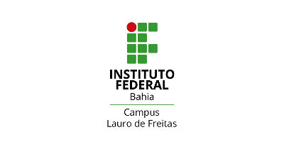
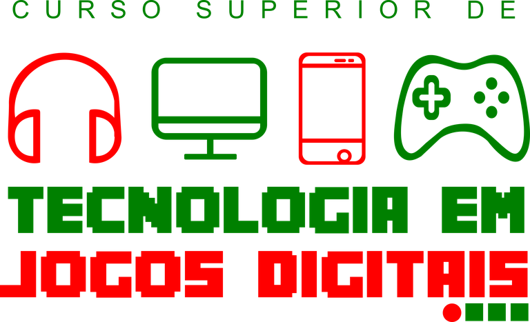

 |
 |
O Curso Superior de Tecnologia em Jogos Digitais tem como objetivo principal formar profissionais
tecnólogos e empreendedores na área de desenvolvimento de Jogos DIgitais aptos a desenvolver
games, sistemas, animaçõs direcionadas para diversas áreas do conhecimeto como entretenimento,
computação gráfica, dentre outros, sempre de forma integrada, seguindo os padrões de qualidade e
produtividades aprendidos durante a sua formação.
| Modalidade: | Turno | Duração | Carga Horária |
|---|---|---|---|
| Sperior | Matutino | 2,5 anos | 2.410 horas |
Após a formação e finalização do curso, o egresso estará apto a atuar no segmento de entretenimento
digital, computação gráfica, permitindo-o: